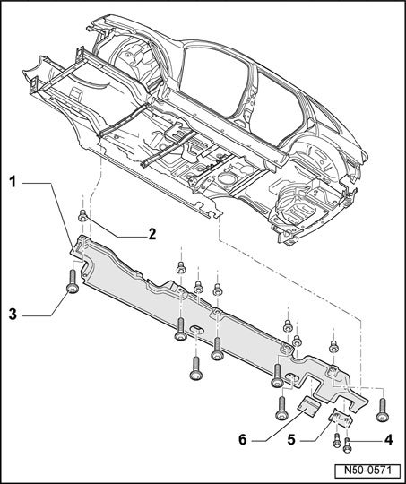

Underbody Cover: Service and Repair
Underbody Trim - Assembly Overview
NOTE: The illustration shows the left side. The right side is similar and can be determined from this.

1 - Underbody cover
2 - Spreader nut
- Qty. 8
3 - Screw
- Qty. 8
- 3.5 Nm
4 - Screw
- Qty. 2
- 9 Nm
5 - Lifting platform take-up point
6 - Cover
- Clipped into underbody cover.